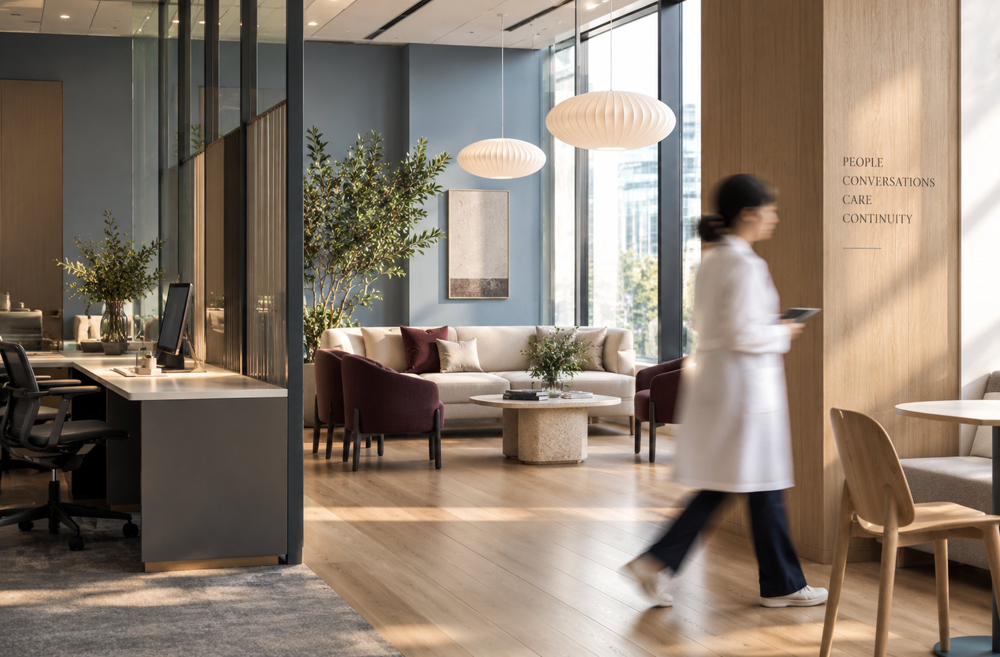

Bài viết · 16/11/2026
Khi người dân có ngày càng nhiều lựa chọn khám chữa bệnh, chuyên môn vẫn là nền tảng nhưng không phải yếu tố duy nhất định hình niềm tin vào một cơ sở y tế. DS. Nguyễn Trần Linh Thảo, nhà sáng lập Zerone, hoạt động trong lĩnh vực đổi mới trải nghiệm chăm sóc sức khỏe, chia sẻ góc nhìn về cách người bệnh và gia đình cảm nhận chất lượng chăm sóc.
Khi chọn một phòng khám, phần lớn chúng ta không có cách nào tự đánh giá đầy đủ chuyên môn của bác sĩ. Chúng ta hỏi người quen, tìm hiểu danh tiếng, xem website, đọc đánh giá và để ý cả cách phòng khám phản hồi trong lần liên hệ đầu tiên. Với nhiều gia đình, quyết định ấy còn có sự tham gia của người thân, đặc biệt khi người cần chăm sóc là trẻ nhỏ, người cao tuổi hoặc đang điều trị bệnh kéo dài.
Theo số liệu được công bố khi hệ thống y tế TP.HCM mới đi vào hoạt động ngày 1/7/2025, thành phố có hơn 9.000 phòng khám chuyên khoa và 351 phòng khám đa khoa. Người bệnh có thêm lựa chọn, nhưng cũng phải cân nhắc giữa nhiều cơ sở mà chất lượng chuyên môn không dễ tự mình so sánh.
Trước khi có đủ điều kiện đánh giá kết quả điều trị, người bệnh thường dựa vào những dấu hiệu gần gũi hơn: thông tin có rõ ràng không, bác sĩ có dành thời gian lắng nghe không, thắc mắc có được giải đáp không, và họ có cảm thấy an tâm khi trao gửi sức khỏe của mình không.
Những dấu hiệu ấy không thể thay thế việc đánh giá năng lực chuyên môn. Tuy nhiên, trải nghiệm không đơn thuần là phần cộng thêm vào chuyên môn, mà còn là cách giá trị chuyên môn trở nên nhìn thấy được đối với người bệnh.
Nếu những ấn tượng ban đầu giúp người bệnh lựa chọn một phòng khám, thì những gì họ trải qua trong và sau buổi khám sẽ góp phần quyết định liệu niềm tin ấy có được duy trì hay không. Với người điều trị kéo dài, khoảng thời gian giữa các lần gặp bác sĩ lặp lại nhiều lần, và mỗi lần là một dịp để họ cảm nhận mình có được đồng hành hay không.
Năm 2020, trong quá trình tìm hiểu nhu cầu hỗ trợ của người bệnh ung thư và gia đình, tôi có dịp trò chuyện với những người đang trải qua hành trình điều trị kéo dài. Điều khiến tôi quan tâm không chỉ là những khó khăn liên quan đến bệnh tật, mà còn là những lo lắng xuất hiện giữa các bước điều trị, khi người bệnh chưa biết điều gì sẽ xảy ra tiếp theo.
Một kết quả xét nghiệm chưa có, một lịch hẹn thay đổi hay một chỉ định cần được giải thích thêm đều có thể khiến người bệnh và gia đình băn khoăn. Với cơ sở y tế, đây có thể là những khoảng thời gian cần thiết trong quá trình chẩn đoán và điều trị; nhưng với người đang chờ đợi, sự thiếu chắc chắn ấy có thể trở thành một phần đáng kể của trải nghiệm điều trị.
Các nghiên cứu về tâm lý chờ đợi cho thấy cảm nhận về thời gian không chỉ phụ thuộc vào số phút thực tế, mà còn chịu ảnh hưởng từ việc người chờ có hiểu lý do và biết điều gì sẽ xảy ra tiếp theo hay không (David H. Maister, The Psychology of Waiting Lines, 1985).
Điều người bệnh cần trong những tình huống như vậy không nhất thiết là lời trấn an rằng mọi chuyện sẽ ổn. Đôi khi, sự an tâm bắt đầu từ những điều rất cụ thể: hiểu tình trạng hiện tại, biết vì sao mình phải chờ và có thể trông đợi điều gì ở bước tiếp theo.
Và người trải qua khoảng chờ ấy không chỉ có người bệnh. Người thân đi cùng cũng có những câu hỏi và nỗi lo riêng, nhất là khi họ sẽ tiếp tục hỗ trợ việc chăm sóc sau khi trở về nhà.
Mỗi quyết định của người bệnh, từ việc có tái khám hay không đến việc có thực hiện kế hoạch điều trị hay không, thường phụ thuộc vào cách họ hiểu điều đã được trao đổi trong buổi khám.
Qua nhiều năm làm việc trong lĩnh vực đào tạo và truyền thông y tế, tôi nhận thấy việc cung cấp thông tin cho người bệnh ngày càng được các cơ sở chăm sóc sức khỏe chú trọng. Tuy nhiên, có một khác biệt quan trọng giữa việc thông tin đã được truyền đạt và việc người tiếp nhận thực sự hiểu, ghi nhớ và có thể sử dụng thông tin ấy.
Trong một buổi khám, người bệnh có thể phải tiếp nhận nhiều thông tin cùng lúc, từ tình trạng sức khỏe, phương án điều trị đến những lưu ý khi trở về nhà. Không phải điều gì được bác sĩ giải thích cũng sẽ được hiểu đầy đủ, ghi nhớ chính xác hoặc dễ dàng áp dụng vào cuộc sống. Vì vậy, chất lượng giao tiếp trong chăm sóc sức khỏe không chỉ nằm ở việc truyền đạt đủ thông tin, mà còn ở cách giúp người bệnh hiểu điều gì quan trọng với mình, biết bước tiếp theo cần làm và có thể chủ động tham gia vào quá trình chăm sóc.
Ở Việt Nam, vấn đề này còn có thêm một lớp khác: người bệnh không phải lúc nào cũng là người duy nhất tiếp nhận thông tin và đưa ra quyết định. Với trẻ nhỏ, người cao tuổi hay người đang điều trị bệnh kéo dài, người thân có thể tham gia trao đổi với bác sĩ, cân nhắc các lựa chọn và hỗ trợ thực hiện kế hoạch chăm sóc. Một lời giải thích trong phòng khám vì thế có thể còn được kể lại, diễn giải và thảo luận thêm khi gia đình trở về nhà.
Tôi từng tiếp cận vấn đề này trong dự án giáo dục nhận biết sớm và chăm sóc trẻ tự kỷ mà mình tham gia phát triển. Ban đầu, chúng tôi quan tâm đến việc giúp gia đình nhận biết những dấu hiệu phát triển khác biệt ở trẻ và tiếp cận đánh giá chuyên môn sớm hơn. Nhưng khi tìm hiểu nhu cầu của phụ huynh, tôi nhận ra một thách thức quan trọng khác là giúp chính những người chăm sóc trẻ sẵn sàng đối diện và đồng hành.
Với cha mẹ, thừa nhận rằng con có thể đang gặp khó khăn về phát triển không đơn thuần là tiếp nhận một thông tin y khoa. Điều đó đôi khi đòi hỏi họ đối diện với nỗi lo, những kỳ vọng dành cho con và cả sự bất định về tương lai. Có những điều phụ huynh đã nhận thấy, nhưng để sẵn sàng tìm hiểu và đưa con đi đánh giá lại là một bước rất khác.
Từ nhận thức ấy, chúng tôi xây dựng hành trình bắt đầu bằng giáo dục cộng đồng, hội thảo và nội dung chuyên môn phát triển quanh những câu hỏi thực tế của gia đình, để phụ huynh từng bước nhận diện vấn đề, tìm hiểu các lựa chọn và chủ động quyết định khi sẵn sàng. Sau đánh giá, việc hỗ trợ được tiếp nối bằng cách tiếp cận phù hợp với từng gia đình và hoạt động theo dõi trong quá trình chăm sóc.
Theo ghi nhận của dự án, khoảng 80% gia đình tiếp tục chương trình chăm sóc toàn diện cho trẻ. Con số này không cho biết riêng yếu tố nào đã khiến họ tiếp tục, nhưng gợi cho tôi một câu hỏi khác về cách đánh giá hiệu quả chăm sóc. Bên cạnh số gia đình tiếp tục chương trình, có lẽ chúng ta cũng nên quan tâm đến việc phụ huynh hiểu được bao nhiêu sau buổi trao đổi, có biết mình cần làm gì trong những ngày tới và biết tìm hỗ trợ ở đâu khi cần.
Điều tôi học được là một kế hoạch phù hợp về chuyên môn vẫn cần sự thấu hiểu và tham gia của những người sẽ thực hiện nó mỗi ngày. Với trẻ nhỏ, hỗ trợ phụ huynh hiểu và đủ sẵn sàng đồng hành cũng là một phần thiết yếu của việc chăm sóc.
Những gì người bệnh hiểu, cảm nhận và trải qua trong quá trình chăm sóc không chỉ ảnh hưởng đến sự hài lòng ở một lần khám. Chúng còn góp phần định hình niềm tin đối với cơ sở y tế, từ đó liên quan đến việc người bệnh có muốn tiếp tục gắn bó và quay lại hay không.
Thương hiệu chăm sóc sức khỏe không chỉ được hình thành từ danh tiếng bác sĩ hay những thông tin người bệnh tìm thấy trước lần khám đầu tiên. Những ấn tượng ấy cần được tiếp nối bằng trải nghiệm thực tế, qua cách dịch vụ được tổ chức, thông tin được truyền đạt và sự hỗ trợ mà người bệnh nhận được trong suốt hành trình chăm sóc.
Tôi phát triển Trust Translation™ như một framework định hướng cách Zerone đồng hành cùng bác sĩ và các cơ sở chăm sóc sức khỏe, chuyển giá trị chuyên môn thành những điều người bệnh có thể nhận biết và tin tưởng. Thay vì chỉ tập trung vào hình ảnh thương hiệu hay từng hoạt động riêng lẻ, chúng tôi quan tâm đến cách những giá trị ấy được thể hiện trong toàn bộ trải nghiệm chăm sóc.
Chẳng hạn, sau một buổi khám, điều cần quan tâm không chỉ là người bệnh đã nhận được kết quả và hướng dẫn hay chưa, mà còn là họ có hiểu tình trạng của mình, biết những việc cần làm tại nhà và biết tìm hỗ trợ ở đâu khi có thắc mắc. Với những trường hợp cần người thân đồng hành, cách truyền đạt thông tin cũng cần tính đến vai trò của gia đình, đồng thời tôn trọng sự đồng ý và quyền riêng tư của người bệnh. Khi được thiết kế như vậy, sự tận tâm không chỉ phụ thuộc vào từng cá nhân, mà còn nằm trong cách cả cơ sở y tế vận hành.

Sau cùng, phía bên kia của mỗi quy trình, dịch vụ hay quyết định chuyên môn vẫn là một con người với những lo lắng, hy vọng và mong muốn được chăm sóc. Một buổi khám có thể kết thúc khi người bệnh bước ra khỏi cửa, nhưng những gì họ đã trải qua sẽ còn theo họ trong hành trình phía trước.
Có lẽ, giá trị sâu sắc của chăm sóc sức khỏe không chỉ nằm ở những gì chúng ta có thể làm cho người bệnh, mà còn ở cách chúng ta giúp họ cảm thấy được thấu hiểu, có thêm sự an tâm và niềm tin để bước tiếp.
DS. Nguyễn Trần Linh Thảo, nhà sáng lập Zerone, hoạt động trong lĩnh vực đổi mới trải nghiệm chăm sóc sức khỏe.